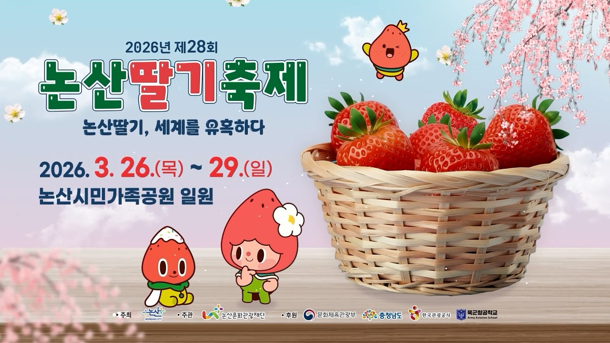
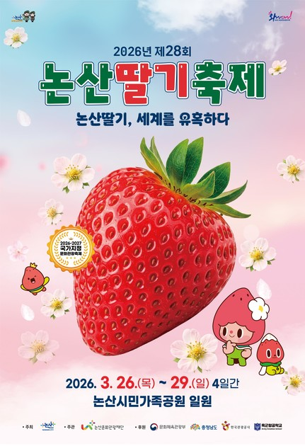
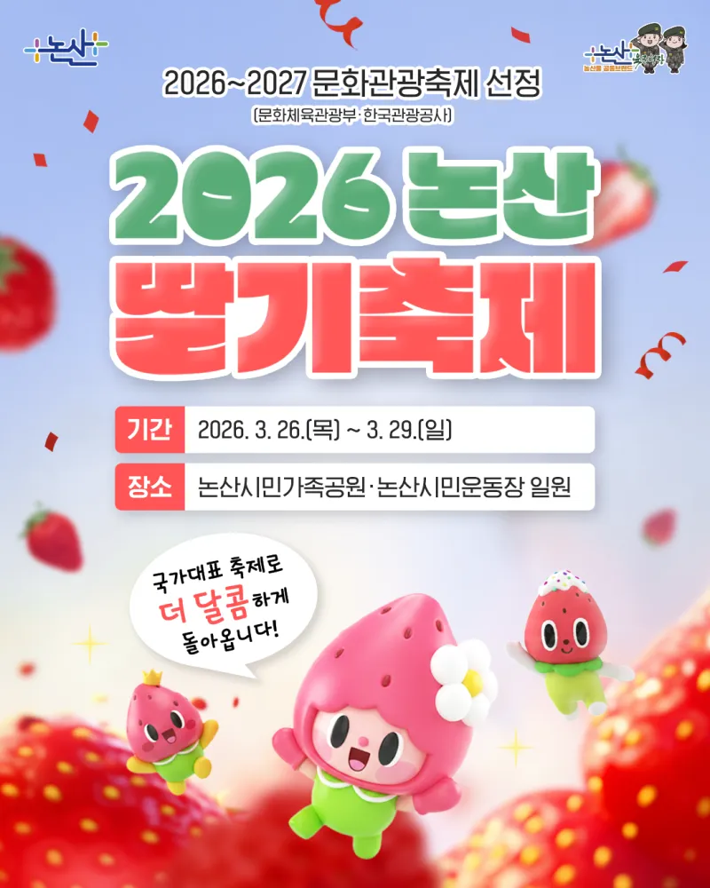

충청남도 논산시에서 매년 개최되는 대한민국 대표 특산물 축제,
논산 딸기 축제에 관한 정보입니다.
|
 |
|
| 행사명 | 제 28회 논산 딸기 축제 |
|---|---|
| 기간 | 2026. 3. 26(목) - 3. 29(일) |
| 장소 | 논산시민가족공원·논산시민운동장 일원 |
| 주요 행사 | 논산청정딸기 수확체험, 논산딸기판매장, 논산딸기 푸드 체험 및 판매 |
| 입장료 | 무료 |
아래는 축제 관람을 위한 상세 안내입니다.
아래는 행사 포스터 이미지들입니다.

